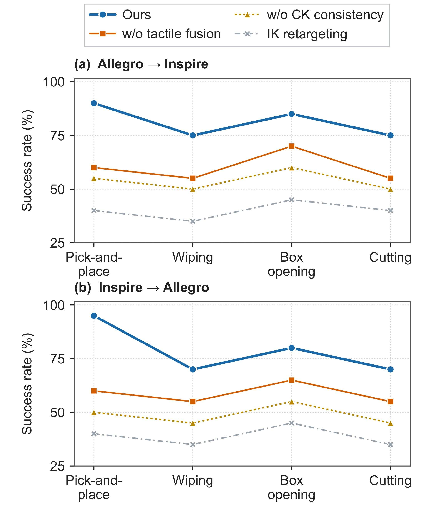
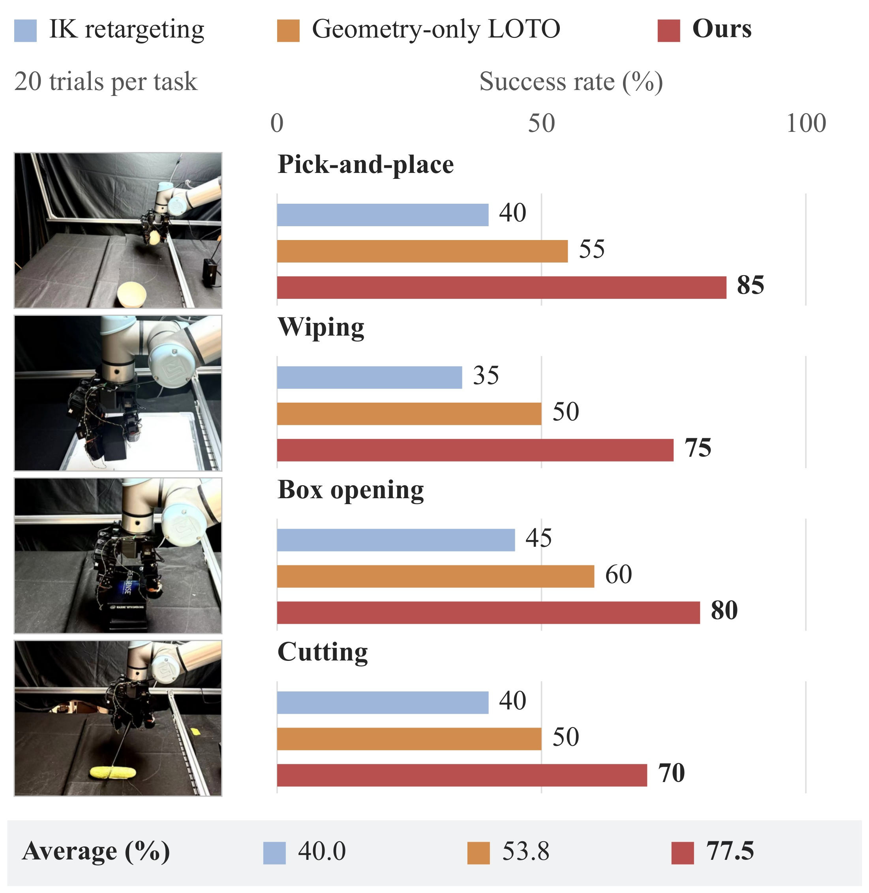
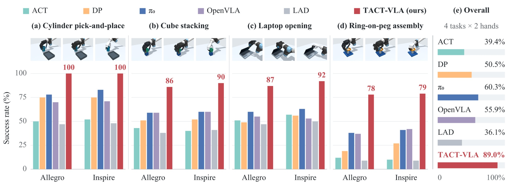
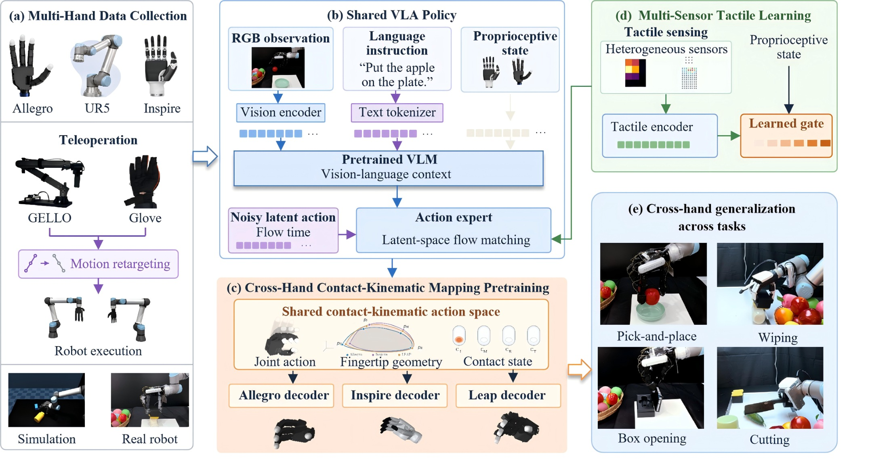
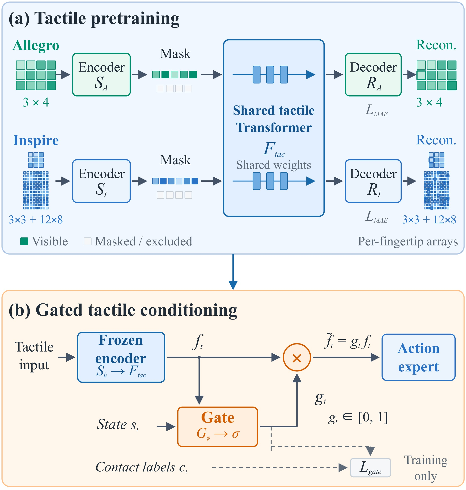
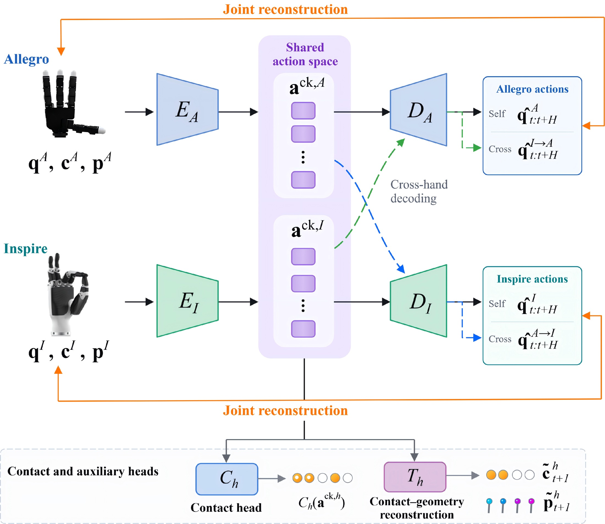

Multi-sensor tactile learning
Sensor-specific encoders and a shared Transformer learn features of the same dimension through within-sensor masked reconstruction.
Anonymous Research Project
A shared manipulation policy combines vision, language, and gated tactile feedback. A contact-kinematic action space and hand-specific decoders support policy reuse between Allegro and Inspire, with adapter-only extension to LeapHand.
Abstract
Multi-fingered dexterous hands offer flexible grasp configurations and coordinated finger motion for tasks such as pick-and-place and tool manipulation. However, differences in hand morphology and tactile sensor configurations hinder the direct reuse of manipulation policies and tactile information across hands.
TACT-VLA encodes observations from different tactile sensors into feature vectors of the same dimension and uses a learnable contact-aware gate to regulate their contribution to action prediction. A latent action space learned from joint actions, fingertip positions, and contact information connects the shared policy to hand-specific decoders that generate executable joint commands.
Across four real-robot tasks—pick-and-place, wiping, box opening, and cutting—the framework achieves an average success rate of 88.1% on Allegro and Inspire, exceeding the best evaluated baseline by 32.5 percentage points. Bidirectional transfer demonstrates policy reuse between these hands, while adaptation to LeapHand achieves an average success rate of 77.5%.
Experiments
Real-world success across four tasks and two hands: Allegro and Inspire.
Simulation success across eight task–hand combinations.
LeapHand success with a frozen VLA and leave-one-task-out adapter training.
Joint training uses 50 demonstrations per task per hand: 200 Allegro and 200 Inspire demonstrations. Each method is evaluated over 20 rollouts per task–hand combination (160 total). Cells report successes out of 20; the mean is taken across all eight combinations (Table I).
| Method | Pick-and-place | Wiping | Box opening | Cutting | Average | ||||
|---|---|---|---|---|---|---|---|---|---|
| Allegro | Inspire | Allegro | Inspire | Allegro | Inspire | Allegro | Inspire | ||
| ACT | 13/20 | 14/20 | 7/20 | 9/20 | 6/20 | 3/20 | 6/20 | 4/20 | 38.8% |
| Diffusion Policy (DP) | 15/20 | 16/20 | 8/20 | 12/20 | 12/20 | 8/20 | 5/20 | 7/20 | 51.9% |
| π0 | 15/20 | 16/20 | 10/20 | 9/20 | 12/20 | 11/20 | 7/20 | 9/20 | 55.6% |
| π0 + Tactile Backbone | 15/20 | 13/20 | 13/20 | 12/20 | 10/20 | 11/20 | 6/20 | 9/20 | 55.6% |
| TACT-VLA (ours) | 19/20 | 19/20 | 17/20 | 16/20 | 19/20 | 18/20 | 17/20 | 16/20 | 88.1% |
The best evaluated baselines, π0 and π0 + Tactile Backbone, both achieve 55.6%. TACT-VLA improves the average by 32.5 percentage points. Direct tactile input alone does not improve the mean under this evaluation protocol.
Source-only VLA training uses 200 task demonstrations from one hand, with no target-hand task demonstrations. The Allegro and Inspire interfaces are pretrained on task-agnostic motion and contact data that exclude the evaluation tasks. Both the policy and target-hand adapter remain frozen during evaluation, with 20 trials per task.
81.3% Allegro → Inspire
78.8% Inspire → Allegro
Removing tactile fusion reduces the mean success rate by 21.3 and 20.0 percentage points, respectively. Removing contact-kinematic consistency produces a larger drop; IK retargeting also performs below the learned interface in both directions.

The shared VLA learns all four tasks exclusively from Allegro and Inspire. LeapHand reuses Allegro's tactile branch, state-input pipeline, and normalization parameters. Only the LeapHand adapter is trained; the VLA, tactile encoder, tactile projection, and contact gate remain fixed.
Under four-fold leave-one-task-out evaluation, each adapter is trained on 150 LeapHand demonstrations from three tasks and evaluated on the held-out fourth task, with 20 trials. The evaluation task is excluded from adapter training.
The full contact-kinematic interface achieves 77.5% on average, compared with 53.8% for geometry-only LOTO and 40.0% for IK retargeting.

Each within-hand loss term is removed separately while the cross-hand objective is unchanged. Fingertip-position error is the mean Euclidean distance between predicted and reference positions (Table II).
| Configuration | Joint RMSE ↓ (rad) | Mean fingertip-position error ↓ (mm) |
|---|---|---|
| Full | 0.1726 ± 0.0059 | 3.18 ± 0.13 |
| w/o Lq | 0.2009 ± 0.0056 | 3.45 ± 0.33 |
| w/o Ltip | 0.1239 ± 0.0038 | 4.42 ± 0.28 |
| w/o Lselfcontact | 0.1724 ± 0.0058 | 3.96 ± 0.19 |
| w/o Ltrans | 0.1829 ± 0.0087 | 3.72 ± 0.20 |
Lower joint error does not necessarily imply better fingertip reconstruction: removing fingertip supervision lowers joint RMSE but increases fingertip-position error.
The within-hand objective is unchanged (Table III).
| Configuration | Fingertip distance MAE ↓ (mm) | Direction error ↓ (°) |
|---|---|---|
| Full | 1.66 ± 0.04 | 2.80 ± 0.32 |
| w/o Lcross,geom | 48.91 ± 9.68 | 45.69 ± 1.86 |
| w/o Lcross,contact | 3.91 ± 0.48 | 4.87 ± 0.36 |
Both geometry and contact supervision contribute to cross-hand geometric consistency.
Four tasks—cylinder pick-and-place, cube stacking, laptop opening, and ring-on-peg assembly—use 50 demonstrations per task per hand. Policies are trained separately for each task and evaluated on Allegro and Inspire with 100 rollouts per task–hand combination (800 total). TACT-VLA averages 89.0%, leading the evaluated methods in all eight combinations. Simulation and real-world policies are trained separately.

Main Idea
Sensor-specific encoders and a shared Transformer learn features of the same dimension through within-sensor masked reconstruction.
A continuous gate uses tactile features and proprioception to regulate tactile input, with frame-level contact supervision during training.
Joint reconstruction, fingertip geometry, contact consistency, and auxiliary contact–geometry reconstruction shape the shared action space.
A UR5e platform supports joint training, bidirectional Allegro–Inspire transfer, and LeapHand adaptation with the VLA policy held fixed.
Method
Visual observations and a language instruction provide VLM context. The action expert combines this context with proprioception and gated tactile features, then uses latent-space flow matching to predict shared action segments. A frozen target-hand decoder converts the predictions into joint commands. Policy training optimizes the action expert, tactile projection layer, and gate while the pretrained tactile encoder and action interfaces remain frozen.

Allegro fingertips provide 3 × 4 tactile arrays. Inspire fingertips contain two sensing regions represented by 3 × 3 and 12 × 8 arrays. Sensor-specific encoders preserve these layouts, while a shared tactile Transformer produces feature vectors of the same dimension.
Stage I: pretrain the encoders and Transformer with within-sensor masked reconstruction, without action or task labels. Discard the reconstruction decoders and freeze the tactile encoder.
Stage II: jointly train a soft contact-aware gate and the action expert. The gate predicts a scalar weight from tactile features and proprioception, supervised by annotated frame-level binary contact labels.
gt = σ(Gφ([ft; st])), f̃t = gt ft, gt ∈ [0, 1]
At inference, the gate predicts continuous weights directly from the observations; contact labels are not required.


Hand-specific encoders map joint-action segments, fingertip positions, and contact states into a shared latent space. Within-hand training supervises joint reconstruction, fingertip geometry, contact states, and auxiliary next-step contact–geometry reconstruction.
Cross-hand geometry compares all six relative fingertip vectors among the thumb, index, middle, and ring fingers in a common anatomical frame while preserving each hand's physical scale. Class-balanced binary cross-entropy supervises cross-hand contact consistency.
The interfaces are pretrained on task-agnostic motion and contact data. After pretraining, the encoders supply fixed latent targets and the decoders supply hand-specific joint commands. Cross-hand transfer holds the shared policy fixed and selects the target-hand decoder.
A new hand requires accurate kinematic calibration and adapter training; a new tactile sensor type requires a compatible sensor-specific encoder. Adaptation is evaluated on one additional hand, LeapHand. Larger morphology differences may restrict executable actions, and tactile-feature transferability across sensor types has not been separately quantified.
Citation
Anonymous manuscript citation.
@misc{anonymous2026tactvla,
title = {TACT-VLA: Tactile-Augmented
Vision-Language-Action Models
for Cross-Hand Policy Transfer},
author = {Anonymous Authors},
year = {2026},
note = {Manuscript}
}